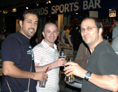

|
Legends Sports Bar & Cafe, Roppongi, June 27th,
350 or so of the Footy Japan faithful descended upon Legends Sports Bar in Roppongi (www.legendsports.jp/eng/eng.html) to celebrate, congratulate, intoxicate, commiserate and generally congregate to bid farewell to the Tokyo Metropolis League's 5th season.
Photo Gallery by KeyShots Photographer Kery Raftis - CLICK HERE
The award ceremony this year was not quite as disgraceful as last year's with the majority of acceptance speeches being kept short and devoid of profanity or sabre rattling. We'll be sure to delay the ceremony by an hour or so next year to give everyone time to get utterly leathered, lose all inhibitions and talk utter bollox when they collect their trophies - come on, we're footballers for god sake - it's not the bloody Oscars...
First up was the Wall Street Associates/Footy Japan Cup, presented by Wall Street Associates' bigwig Rob England to runners up British Football Club. Jay Alabaster collected the main trophy on behalf of winners Tokyo Hibernian FC - first-time winners of this prestigious competition, which involves all 3-divisions.
New kids on the block Panthers FC won the Plate competition. Although their final standing in Division 3 was nothing to write home again, it’s always good to win some silverware in your first season – let ‘em know you’re there. Panthers’ captain and IFG-Asia sage Nick Webb gleefully accepted the Frisbee-esque award on behalf of the team and his company who sponsor them.
*Runners up in Division 3 were Albion Old Boys who along with Division 3 Champions FC International will see themselves playing Division 2 football next season. There'll be replaced by Wall Street Clash and KGFC who failed to hold their own in Division 2.
Division 2 Champions Lions FC topped the Second Division leaving all others in their wake.
 This zealous team, with their distinctive white strip brandishing the team sponsor's eminent Panduit logo, struck fear into all-comers in Division 2 and according Lions' management they are relishing the opportunity of playing top-flight football next season. This zealous team, with their distinctive white strip brandishing the team sponsor's eminent Panduit logo, struck fear into all-comers in Division 2 and according Lions' management they are relishing the opportunity of playing top-flight football next season.
*The second promotion spot came right down to the wire between Maritizio FC and France FC. Equal on points it was only France's superior goal difference that granted them passage back into the First Division, a Division they are more than familiar with. Lions and France will be replaced by subjugates Vagabonds and Saitama JETs FC.
Division 1-title holders the British Football Club, managed to retain their authority in the top division, thwarting threats from runners up Hibs and third placed Sala FC.
The top goal scorers in the three divisions were as follows and were decorated with a lovely pair of brand new Puma boots adorned with a stunning fluorescent turquoise embellishment that would look less out of place in Shinjuku 2-chome than they would on a football pitch, but they are worth about 22,000JPY! I guess there’s always e-bay if you’re not a fan.
Division 1: Steve Lidbury – British Embassy FC (13 goals in 18 games)
Division 2: Taichi Sugiura – France FC (17 goals in 16 games)
Division 3: Tim Daulat – FC International (11 goals in 14 games)
Footy Japan wishes to thank everyone who attended the party and has supported our endeavours with the Tokyo Metropolis League, British Football Academy and all of the tournaments we’ve hosted and co-hosted (www.footyjapan.com/pages/fjtnews.html). Without the help from all the teams, our wonderful officials, and of course the generous support of our sponsors, well… it doesn’t bear thinking about…
Some of Footy Japan's staunchest supporters and sponsors were also seen enjoying a beer or two amongst the throngs, including Mark Spencer owner of Legend's and the Hobgoblin pubs; Simon Litster of Magellan who have consistently supported Footy Japan's charity endeavours and currently sponsor the YC&AC football team; Gregory Glanzmann from BMW Motorrad (and his rather hot partner) ; Nicholas Webb et. al. from IFG Asia (investments/mortgages) - sponsors of the New Year 7's tournament and the ubiquitous Footy Japan members' cards (Tokyo Sports Cafe/Lime being the most recent bar offering cardholders sweet discounts on booze and Rob England from Wall Street Associates who have kindly sponsored the Footy Japan/Wall Street Associates Cup competition for many seasons now, not to mention our charitable endeavours.

Thank you all.
Report by FJ
*Please note some of the information contained in the paragraphs marked with an * may be subject to change prior to the start of TML Season 6.
|